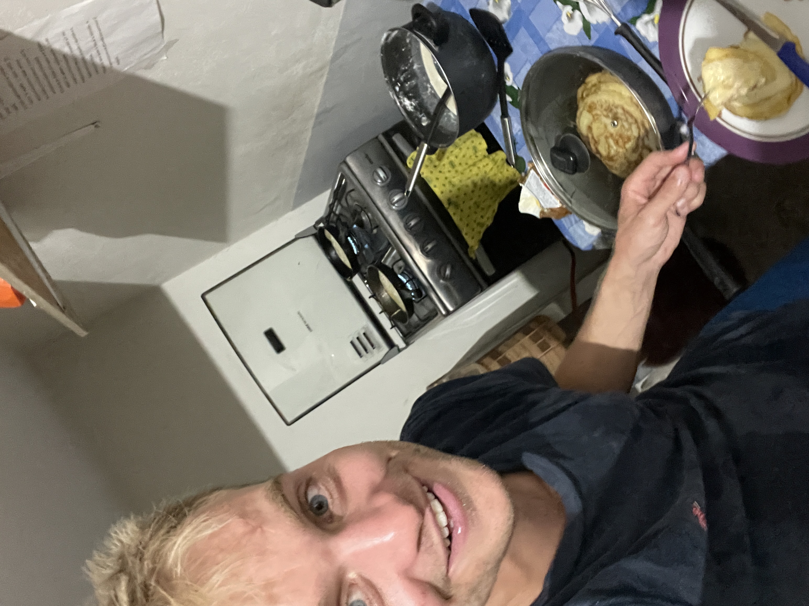

12 De eerste
versnelling
Eten om van te smullen,
even helemaal niets
en een verjaardagsverrassing

 Er gebeurde een hoop de eerste weken in hoofdstad Lima en aan de Noordkust van Peru. Van het verplaatsen, het ontmoeten van nieuwe mensen en het tegelijkertijd werken vanuit drukke hostels had ik even genoeg gehad. En dus pakte ik begin augustus de kaart van Peru erbij, op zoek naar een rustig plekje om voor wat langere tijd te kunnen blijven. Nog in Nederland had ik het er al op staan om het Amazone regenwoud te bezoeken. Na wat speurwerk op Airbnb kwam ik uit bij Tarapoto, aan de rand van de Amazone, waar ik een eigen kamer zou krijgen en zelfs een balkon. Wat een luxe, en wat kan je blij zijn met weinig. Al voor de derde keer vertrok ik met de nachtbus tot ik wakker werd en de zon als een rode kanonskogel aan de horizon zag opkomen tussen rivieren, oude houten huisjes en bananenbomen.
Er gebeurde een hoop de eerste weken in hoofdstad Lima en aan de Noordkust van Peru. Van het verplaatsen, het ontmoeten van nieuwe mensen en het tegelijkertijd werken vanuit drukke hostels had ik even genoeg gehad. En dus pakte ik begin augustus de kaart van Peru erbij, op zoek naar een rustig plekje om voor wat langere tijd te kunnen blijven. Nog in Nederland had ik het er al op staan om het Amazone regenwoud te bezoeken. Na wat speurwerk op Airbnb kwam ik uit bij Tarapoto, aan de rand van de Amazone, waar ik een eigen kamer zou krijgen en zelfs een balkon. Wat een luxe, en wat kan je blij zijn met weinig. Al voor de derde keer vertrok ik met de nachtbus tot ik wakker werd en de zon als een rode kanonskogel aan de horizon zag opkomen tussen rivieren, oude houten huisjes en bananenbomen.
 Peru ligt aan de westkust van Zuid-Amerika aan de grote oceaan en grenst van noord tot zuid aan Ecuador, Colombia, Brazilië, Bolivia en Chili. Het land telt 33 miljoen inwoners waarvan er zo’n 9 miljoen in de hoofdstad Lima wonen. De droge kuststrook (la costa), het Andes gebergte (la cierra) en de jungel (la selva) zijn de landschapstypen van Peru en Tarapoto ligt dus in de jungle. Na een weekje ben ik er wat meer op mijn gemak, en lukt het ook om een praatje te maken met de lokale mensen. ‘En, wat vind je van het eten hier?’ vragen ze me dan vaak apetrots. Vooraf dacht ik dat het eten in Latijns Amerika erg vet was en voornamelijk uit empanadas bestond, maar die heb je blijkbaar meer in Argentinië. Het eten hier is gevarieerd en echt verrukkelijk. Vooral op de lokale markt is het smullen en bovendien spotgoedkoop. Bestel je tijdens de lunch een menu, dan kan je dan voor €1,75 op een krukje plaatsnemen en krijg je bijvoorbeeld Ceviche of een soep vooraf, een hoofdgerecht zoals ‘pollo a la plancha’, ‘pescado sudada’ of ‘lomo saltado’ als hoofdgerecht met een drankje chicha morada, gemaakt van paarse mais. En binnen 1 minuut staat het voor je neus. Echt een ervaring omdat de mensen hier zelden een blonde westerling zien. Maar zodra ze een woordje spaans horen dan is het ijs al gauw gebroken.
Peru ligt aan de westkust van Zuid-Amerika aan de grote oceaan en grenst van noord tot zuid aan Ecuador, Colombia, Brazilië, Bolivia en Chili. Het land telt 33 miljoen inwoners waarvan er zo’n 9 miljoen in de hoofdstad Lima wonen. De droge kuststrook (la costa), het Andes gebergte (la cierra) en de jungel (la selva) zijn de landschapstypen van Peru en Tarapoto ligt dus in de jungle. Na een weekje ben ik er wat meer op mijn gemak, en lukt het ook om een praatje te maken met de lokale mensen. ‘En, wat vind je van het eten hier?’ vragen ze me dan vaak apetrots. Vooraf dacht ik dat het eten in Latijns Amerika erg vet was en voornamelijk uit empanadas bestond, maar die heb je blijkbaar meer in Argentinië. Het eten hier is gevarieerd en echt verrukkelijk. Vooral op de lokale markt is het smullen en bovendien spotgoedkoop. Bestel je tijdens de lunch een menu, dan kan je dan voor €1,75 op een krukje plaatsnemen en krijg je bijvoorbeeld Ceviche of een soep vooraf, een hoofdgerecht zoals ‘pollo a la plancha’, ‘pescado sudada’ of ‘lomo saltado’ als hoofdgerecht met een drankje chicha morada, gemaakt van paarse mais. En binnen 1 minuut staat het voor je neus. Echt een ervaring omdat de mensen hier zelden een blonde westerling zien. Maar zodra ze een woordje spaans horen dan is het ijs al gauw gebroken.
In plaats van koffiezaakjes hebben ze hier kraampjes met fruit shakes gemaakt van de meest exotische fruitsoorten zoals Papaya, Pitahaya of Camu camo. Je kan hier dus met een gerust hart eens wat anders proberen dan de appel, de banaan en de sinaasappel. De markt puilt uit van de avocado’s die hier van nature groeien aan de bomen. Bananen bakken ze in de pan en passen blijkbaar bij ieder gerecht. Alle delen van de kip, het varken of rund worden op een parilla gebakken, een grote rechthoekige kolenbarbecue waar de hele straat van mee kan eten. Restaurant ‘Central’ in de hoofdstad Lima is zelfs verkozen tot het beste restaurant ter wereld.
 Tijdens een oorlog tussen Amerika en Mexico is ooit het woord ‘gringo’ ontstaan, wat staat voor de blanke westerse man. Zo nu en dan roepen mensen op straat dit naar je. Het is niet altijd leuk om te horen, maar laat je zien dat je het als een grapje ontvangt, dan breek je opnieuw het ijs. Soms word je doodgegooid met de vraag of je met de motortaxi mee wil en of je een tour wilt boeken. Mensen denken dat je een wandelende portemonnee bent. Maar ook dat kan je de mensen hier natuurlijk niet kwalijk nemen, want wij hebben over het algemeen natuurlijk ook wel wat meer te besteden.
Tijdens een oorlog tussen Amerika en Mexico is ooit het woord ‘gringo’ ontstaan, wat staat voor de blanke westerse man. Zo nu en dan roepen mensen op straat dit naar je. Het is niet altijd leuk om te horen, maar laat je zien dat je het als een grapje ontvangt, dan breek je opnieuw het ijs. Soms word je doodgegooid met de vraag of je met de motortaxi mee wil en of je een tour wilt boeken. Mensen denken dat je een wandelende portemonnee bent. Maar ook dat kan je de mensen hier natuurlijk niet kwalijk nemen, want wij hebben over het algemeen natuurlijk ook wel wat meer te besteden.
 Het is zo vreemd om hier een maand lang een compleet lege agenda te hebben. Altijd gaat het leven in vogelvlucht, en nu lijkt het leven wel stil te staan. Voor even geen verjaardagen, housewarmings en zelfs geen avondjes dansen. Niet bestookt worden met de hectiek van van alle wereldproblemen waar we ons vandaag de dag terecht zo druk om maken. Lekker hier zijn met weinig. De snelheid van het leven op het ritme van de opkomende en ondergaande zon. Ik heb onwijs veel tijd om mijn werk echt goed te kunnen doen en daarnaast hou ik nog uren over. De Cumbaza rivier, op twintig minuten lopen vanaf mijn appartement, is mijn lievelingsplekje geworden om na het programmeren de laatste zonnestralen mee te pakken. Ben je hier, dan zie en hoor je overal om je heen vogels, zoals bijvoorbeeld snel flapperende kolibries of een groep van wel honderden grote gieren, zwevend op thermiek in de lucht. Met langs de oevers grote hawaiiaanse palmbomen met dichtbegroeide lianen en bomen met cacao fruit waar onze hagelslag van wordt gemaakt. Dagen parende libellen die op je schouder komen zitten of een fladderende blauwe vlinder zo groot als je hand. En ga zo maar door. Een mooi geel vogeltje zat lekker rustig voor me op een steen terwijl ik las uit mijn boek. Een duikje, en dan weer even opdrogen op een grote steen die nog lekker warm was van de dag. Kan dit niet eeuwig duren?
Het is zo vreemd om hier een maand lang een compleet lege agenda te hebben. Altijd gaat het leven in vogelvlucht, en nu lijkt het leven wel stil te staan. Voor even geen verjaardagen, housewarmings en zelfs geen avondjes dansen. Niet bestookt worden met de hectiek van van alle wereldproblemen waar we ons vandaag de dag terecht zo druk om maken. Lekker hier zijn met weinig. De snelheid van het leven op het ritme van de opkomende en ondergaande zon. Ik heb onwijs veel tijd om mijn werk echt goed te kunnen doen en daarnaast hou ik nog uren over. De Cumbaza rivier, op twintig minuten lopen vanaf mijn appartement, is mijn lievelingsplekje geworden om na het programmeren de laatste zonnestralen mee te pakken. Ben je hier, dan zie en hoor je overal om je heen vogels, zoals bijvoorbeeld snel flapperende kolibries of een groep van wel honderden grote gieren, zwevend op thermiek in de lucht. Met langs de oevers grote hawaiiaanse palmbomen met dichtbegroeide lianen en bomen met cacao fruit waar onze hagelslag van wordt gemaakt. Dagen parende libellen die op je schouder komen zitten of een fladderende blauwe vlinder zo groot als je hand. En ga zo maar door. Een mooi geel vogeltje zat lekker rustig voor me op een steen terwijl ik las uit mijn boek. Een duikje, en dan weer even opdrogen op een grote steen die nog lekker warm was van de dag. Kan dit niet eeuwig duren?
Soms pak ik mijn dagboek en schrijf ik wat dingen op. Of ik zet de tv aan en probeer de Spaanstalige gesprekken te volgen. Het voetbalseizoen is weer begonnen en de wedstrijden van NAC Breda zijn leuk om te zien, en bieden wat structuur aan de week. Als je zo veel alleen bent dan heb je soms fases dat je het helemaal geweldig vindt en soms zie je het ook even helemaal niet zitten. Ik ken hier natuurlijk niemand, dus ik ben erg blij dat de familie waar ik bij woon mij af en toe op sleeptouw neemt. Zo ben ik met zus Sol gaan verhuizen, met Juan-Carlos een bar gaan bezoeken en heb ik de moeder Betty geholpen in de tuin. Je bent gewoon blij dat je jezelf nuttig kan maken. Een groot succes was ook het bakken van pannenkoeken met spek en kaas voor de hele familie. Een jonge knul van drie jaar was er dol op. Hij vond de stroop heel lekker, en bleef omdat hij de stroop niet kende maar vragen om meer honing.
 Een paar weken voor mijn 31e verjaardag belde Veronica, de meid die ik in het Noorden van Peru had ontmoet, om dat weekend langs te komen in Tarapoto. Ik was blij verrast, want hoe gaaf is dat een Peruaanse dame je wilt komen opzoeken en natuurlijk al helemaal op je verjaardag. Voor ik uit het noorden vertrok, was ik nog een weekendje bij haar op bezoek geweest in het kustplaatsje Talara, waar ze me had laten zien hoe ze op een grote olieraffinaderij werkt en woont met haar hond Kyra. We houden beide erg van nieuwe plekken ontdekken dus reisden we af naar de mooie stad Moyobamba op twee uurtjes van Tarapoto, waar de vele muurschilderingen weerspiegelen hoe verbonden de mensen hier leven met de natuur. Flink balen toen we hoorden dat de kanotocht die we gepland hadden niet door kon gaan vanwege de lage waterstand, maar de teleurstelling was nog niet ingedaald, of Veronica had al een praatje aangeknoopt met een schipper die op het punt stond om met zijn hele familie een dagtocht te maken naar een afgelegen strand. We mochten mee en werden meteen opgenomen als een van hen. Mee eten was ook geen probleem, wat nog maar eens laat zien hoe ongelofelijk vriendelijk de mensen hier zijn. Het was een fantastische verjaardag.
Een paar weken voor mijn 31e verjaardag belde Veronica, de meid die ik in het Noorden van Peru had ontmoet, om dat weekend langs te komen in Tarapoto. Ik was blij verrast, want hoe gaaf is dat een Peruaanse dame je wilt komen opzoeken en natuurlijk al helemaal op je verjaardag. Voor ik uit het noorden vertrok, was ik nog een weekendje bij haar op bezoek geweest in het kustplaatsje Talara, waar ze me had laten zien hoe ze op een grote olieraffinaderij werkt en woont met haar hond Kyra. We houden beide erg van nieuwe plekken ontdekken dus reisden we af naar de mooie stad Moyobamba op twee uurtjes van Tarapoto, waar de vele muurschilderingen weerspiegelen hoe verbonden de mensen hier leven met de natuur. Flink balen toen we hoorden dat de kanotocht die we gepland hadden niet door kon gaan vanwege de lage waterstand, maar de teleurstelling was nog niet ingedaald, of Veronica had al een praatje aangeknoopt met een schipper die op het punt stond om met zijn hele familie een dagtocht te maken naar een afgelegen strand. We mochten mee en werden meteen opgenomen als een van hen. Mee eten was ook geen probleem, wat nog maar eens laat zien hoe ongelofelijk vriendelijk de mensen hier zijn. Het was een fantastische verjaardag.
Voor Veronica weer vertrok zijn we nog even naar een stuk land gaan kijken net buiten Tarapoto. Een nu nog braakliggend terrein met grootse plannen voor over een aantal jaar. Hoe bijzonder is het dat je iemand ontmoet uit het land zelf en die je ook nog eens met plezier helpt om beter te worden in het spreken van Spaans. Tijdens zo’n weekend samen gaat je dat spreken natuurlijk als een raket vooruit. We namen afscheid en een paar dagen later vertrok ik naar het zuiden van Peru. Met een rugzak vol herinneringen aan Tarapoto, waar even niet zoveel hoefde en ik genoot van het leven in de eerste versnelling.